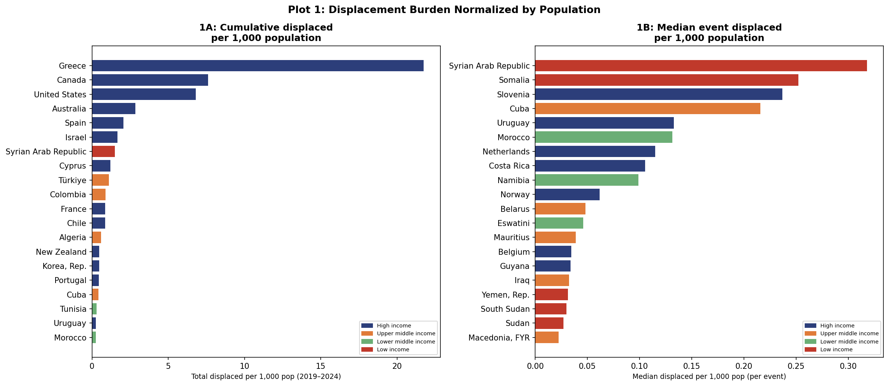
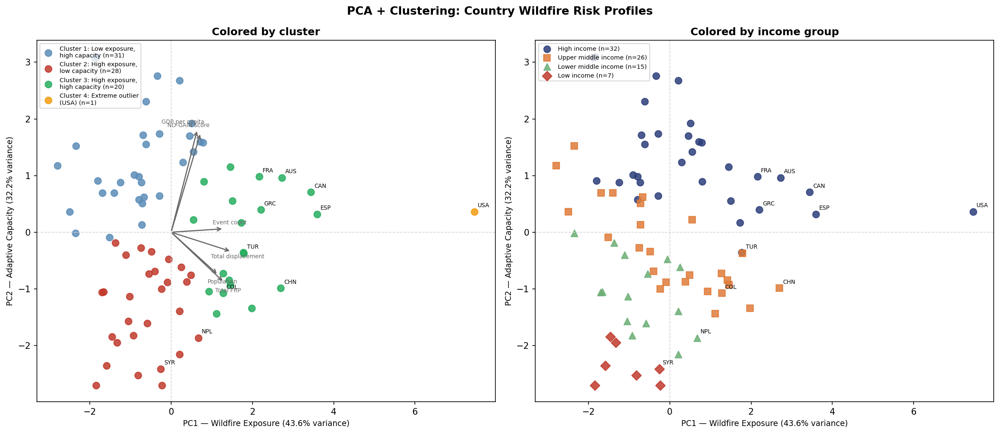
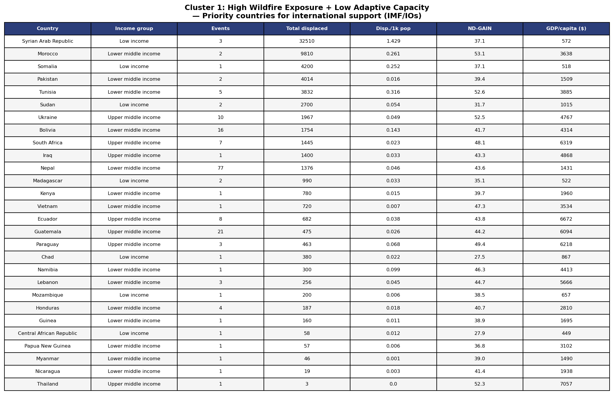
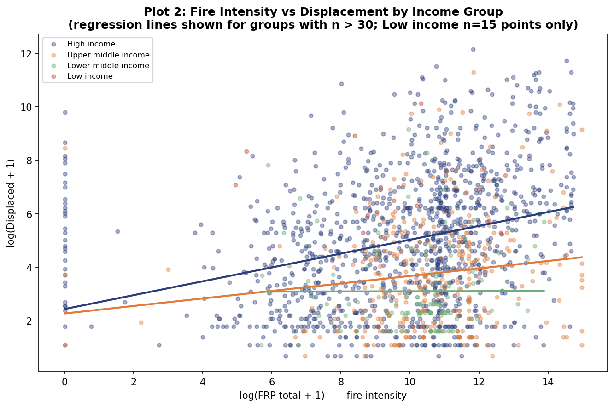
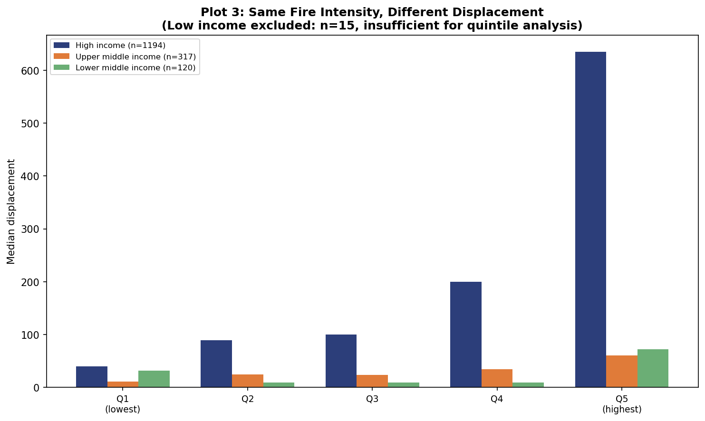
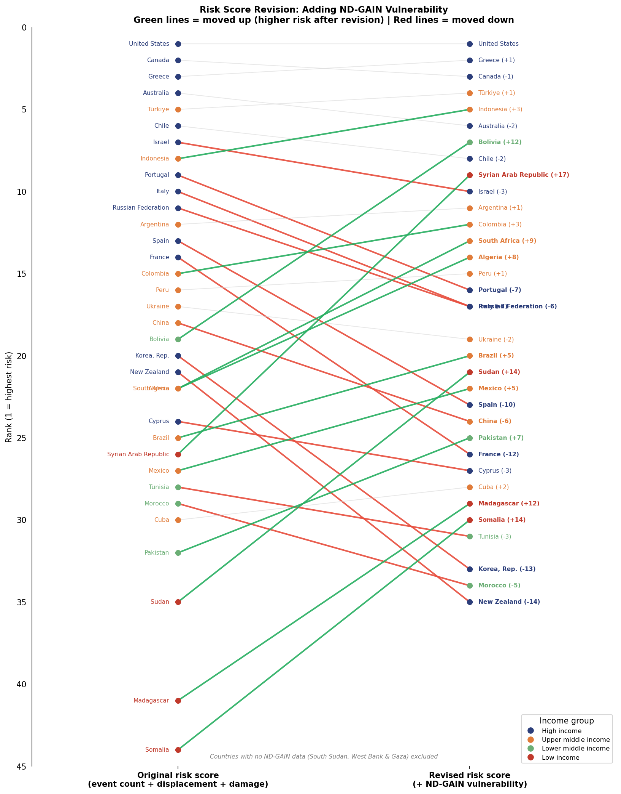

Multi-source event-level analysis of 1,648 wildfire displacement events across 87 countries (2019–2024). The central question: does fire intensity — measured via NASA FIRMS Fire Radiative Power (FRP) — predict who gets displaced? The answer: barely. Fire size explains roughly 10% of displacement variance globally.
The more telling finding is what happens when you disaggregate by income group. The FRP–displacement correlation inverts in low-income countries (ρ = −0.31), meaning larger fires are associated with fewer reported displacements there. This is not a damage signal — it is a reporting-capacity signal. Countries with weaker displacement monitoring systems systematically under-report events regardless of fire severity.

Normalized wildfire displacement — country-level overview (2019–2024)

PCA biplot: PC1 (exposure) vs. PC2 (adaptive capacity)

K-Means cluster profiles (K=4)
ρ = 0.32
FRP max is the strongest predictor globally (p<0.001), but explains only ~10% of displacement variance
ρ = −0.31
FRP–displacement correlation inverts in low-income countries — large fires, almost no reported displacement
R² = 0.17
Log-log OLS with country + year FEs — structural factors, not fire intensity, drive displacement patterns
28
Countries in the "high-exposure, low-capacity" cluster: Syria, Sudan, Nepal, Somalia — under-reported, not low-risk

FRP vs. displacement — correlation by income group

Displacement counts by income quintile
The ND-GAIN re-weighting shifts Sub-Saharan Africa and MENA countries significantly up in risk rankings when reporting capacity is accounted for: Syria ▲14, Sudan ▲24, Somalia ▲24 positions. The standard fire-intensity lens misclassifies the most vulnerable populations as low-risk because it mistakes silence in the data for safety.

Risk rank shifts after ND-GAIN re-weighting
Built with Plotly Dash, deployed on AWS EC2. May require a moment to load.